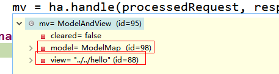

SpringMVC视图解析；
1、方法执行后的返回值会作为页面地址参考，转发或者重定向到页面
2、视图解析器可能会进行页面地址的拼串；
1、任何方法的返回值，最终都会被包装成ModelAndView对象

2、processDispatchResult(processedRequest, response, mappedHandler, mv, dispatchException);来到页面的方法
视图渲染流程：将域中的数据在页面展示；页面就是用来渲染模型数据的；
3、调用render(mv, request, response);渲染页面
4、View与ViewResolver；
ViewResolver的作用是根据视图名（方法的返回值）得到View对象；

5、怎么能根据方法的返回值（视图名）得到View对象？
protected View resolveViewName(String viewName, Map<String, Object> model, Locale locale,
HttpServletRequest request) throws Exception {
//遍历所有的ViewResolver；
for (ViewResolver viewResolver : this.viewResolvers) {
//viewResolver视图解析器根据方法的返回值，得到一个View对象；
View view = viewResolver.resolveViewName(viewName, locale);
if (view != null) {
return view;
}
}
return null;
}
resolveViewName实现
@Override
public View resolveViewName(String viewName, Locale locale) throws Exception {
if (!isCache()) {
return createView(viewName, locale);
}
else {
Object cacheKey = getCacheKey(viewName, locale);
View view = this.viewAccessCache.get(cacheKey);
if (view == null) {
synchronized (this.viewCreationCache) {
view = this.viewCreationCache.get(cacheKey);
if (view == null) {
// Ask the subclass to create the View object.
//根据方法的返回值创建出视图View对象；
view = createView(viewName, locale);
if (view == null && this.cacheUnresolved) {
view = UNRESOLVED_VIEW;
}
if (view != null) {
this.viewAccessCache.put(cacheKey, view);
this.viewCreationCache.put(cacheKey, view);
if (logger.isTraceEnabled()) {
logger.trace("Cached view [" + cacheKey + "]");
}
}
}
}
}
return (view != UNRESOLVED_VIEW ? view : null);
}
}
创建View对象；

@Override
protected View createView(String viewName, Locale locale) throws Exception {
// If this resolver is not supposed to handle the given view,
// return null to pass on to the next resolver in the chain.
if (!canHandle(viewName, locale)) {
return null;
}
// Check for special "redirect:" prefix.
if (viewName.startsWith(REDIRECT_URL_PREFIX)) {
String redirectUrl = viewName.substring(REDIRECT_URL_PREFIX.length());
RedirectView view = new RedirectView(redirectUrl, isRedirectContextRelative(), isRedirectHttp10Compatible());
return applyLifecycleMethods(viewName, view);
}
// Check for special "forward:" prefix.
if (viewName.startsWith(FORWARD_URL_PREFIX)) {
String forwardUrl = viewName.substring(FORWARD_URL_PREFIX.length());
return new InternalResourceView(forwardUrl);
}
// Else fall back to superclass implementation: calling loadView.
//如果没有前缀就使用父类默认创建一个View；
return super.createView(viewName, locale);
}


返回View对象；
1、视图解析器得到View对象的流程就是，所有配置的视图解析器都来尝试根据视图名（返回值）得到View（视图）对象；如果能得到就返回，得不到就换下一个视图解析器；
2、调用View对象的render方法；
@Override
public void render(Map<String, ?> model, HttpServletRequest request, HttpServletResponse response) throws Exception {
if (logger.isTraceEnabled()) {
logger.trace("Rendering view with name '" + this.beanName + "' with model " + model +
" and static attributes " + this.staticAttributes);
}
Map<String, Object> mergedModel = createMergedOutputModel(model, request, response);
prepareResponse(request, response);
//渲染要给页面输出的所有数据
renderMergedOutputModel(mergedModel, request, response);
}
InternalResourceView有这个方法renderMergedOutputModel；
@Override
protected void renderMergedOutputModel(
Map<String, Object> model, HttpServletRequest request, HttpServletResponse response) throws Exception {
// Determine which request handle to expose to the RequestDispatcher.
HttpServletRequest requestToExpose = getRequestToExpose(request);
// Expose the model object as request attributes.
//将模型中的数据放在请求域中
exposeModelAsRequestAttributes(model, requestToExpose);
// Expose helpers as request attributes, if any.
exposeHelpers(requestToExpose);
// Determine the path for the request dispatcher.
String dispatcherPath = prepareForRendering(requestToExpose, response);
// Obtain a RequestDispatcher for the target resource (typically a JSP).
RequestDispatcher rd = getRequestDispatcher(requestToExpose, dispatcherPath);
if (rd == null) {
throw new ServletException("Could not get RequestDispatcher for [" + getUrl() +
"]: Check that the corresponding file exists within your web application archive!");
}
// If already included or response already committed, perform include, else forward.
if (useInclude(requestToExpose, response)) {
response.setContentType(getContentType());
if (logger.isDebugEnabled()) {
logger.debug("Including resource [" + getUrl() + "] in InternalResourceView '" + getBeanName() + "'");
}
rd.include(requestToExpose, response);
}
else {
// Note: The forwarded resource is supposed to determine the content type itself.
if (logger.isDebugEnabled()) {
logger.debug("Forwarding to resource [" + getUrl() + "] in InternalResourceView '" + getBeanName() + "'");
}
rd.forward(requestToExpose, response);
}
}
将模型中的所有数据取出来全放在request域中
protected void exposeModelAsRequestAttributes(Map<String, Object> model, HttpServletRequest request) throws Exception {
for (Map.Entry<String, Object> entry : model.entrySet()) {
String modelName = entry.getKey();
Object modelValue = entry.getValue();
if (modelValue != null) {
request.setAttribute(modelName, modelValue);
if (logger.isDebugEnabled()) {
logger.debug("Added model object '" + modelName + "' of type [" + modelValue.getClass().getName() +
"] to request in view with name '" + getBeanName() + "'");
}
}
else {
request.removeAttribute(modelName);
if (logger.isDebugEnabled()) {
logger.debug("Removed model object '" + modelName +
"' from request in view with name '" + getBeanName() + "'");
}
}
}
}
一句话：
视图解析器只是为了得到视图对象；视图对象才能真正的转发（将模型数据全部放在请求域中）或者重定向到页面
视图对象才能真正的渲染视图；
ViewResolver;

View:

1、导包导入了jstl的时候会自动创建为一个jstlView；可以快速方便的支持国际化功能；
2、可以支持快速国际化；
1）、javaWeb国际化步骤；
1）、得得到一个Locale对象；
2）、使用ResourceBundle绑定国际化资源文件；
3）、使用ResourceBundle.getString("key")；获取到国际化配置文件中的值；
4）、web页面的国际化，fmt标签库来做；
<fmt:setLocale>
<fmt:setBundle >
<fmt:message>
2）、有了JstlView以后；
1）、让Spring管理国际化资源就行
<!--让SpringMVC管理国际化资源文件；配置一个资源文件管理器 -->
<bean id="messageSource" class="org.springframework.context.support.ResourceBundleMessageSource">
<!-- basename指定基础名-->
<property name="basename" value="i18n"></property>
</bean>
2）、直接去页面使用<fmt:message>；
<fmt:message key="welcomeinfo"/>
</h1>
<form action="">
<fmt:message key="username"/>:<input /><br/>
<fmt:message key="password"/>:<input /><br/>
<input type="submit" value='<fmt:message key="loginBtn"/>'/>
</form>
一定要过SpringMVC的视图解析流程，人家会创建一个jstlView帮你快速国际化；
也不能写forward:（
if (viewName.startsWith(FORWARD_URL_PREFIX)) {
String forwardUrl = viewName.substring(FORWARD_URL_PREFIX.length());
return new InternalResourceView(forwardUrl);
}
）
扩展：加深视图解析器和视图对象；
视图解析器根据方法的返回值得到视图对象；
多个视图解析器都会尝试能否得到视图对象；
视图对象不同就可以具有不同功能；
for (ViewResolver viewResolver : this.viewResolvers) {
//viewResolver视图解析器根据方法的返回值，得到一个View对象；
View view = viewResolver.resolveViewName(viewName, locale);
if (view != null) {
return view;
}
}
1、让我们的视图解析器工作；
2、得到我们的视图对象
3、我们的视图对象自定义渲染逻辑
response.getWriter().write("哈哈<h1>即将展现精彩内容</h1>");

1、自定义视图和视图解析器的步骤；
1）、编写自定义的视图解析器，和视图实现类
2）、视图解析器必须放在ioc容器中，让其工作，能创建出我们的自定义视图对象；